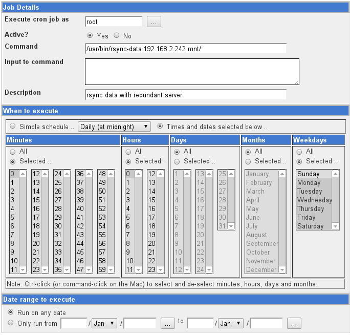
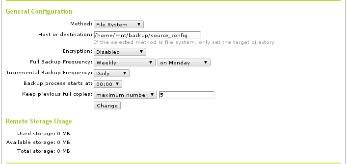
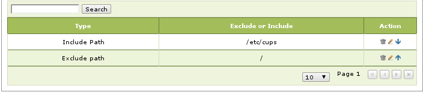

Redundant Server Setup¶
Two AAltSys servers on the same network, a primary server and a backup server, can provide redundant data storage and server functions. In case the primary server fails, a few commands issued on a backup server will allow it to assume the role of the primary server. This guide describes installing a backup server, adding it to the network, and configuring the primary server to backup to it.
Two common approaches to creating a redundant server array are: file copy, and device replication. The simpler approach is to copy files from the primary server to the backup system, as this involves nothing more than operating system command line steps. Device replication, where the devices containing data are mirrored between primary and backup machines, requires special system and device configuration. This procedure creates a filecopy redundant server.
File Copy Backup Server¶
Switching to a Backup Server¶
To switch to a backup server, the primary server must first be shutdown. If the primary server is a network gateway machine, then move the external network interface connection (NIC device eth0) from the primary server to the backup server. Then:
Login to the backup server, and start Zentyal.
Navigate to :menuselection:`Core --> System --> Backup --> General`.
Change the :guilabel:`Host or destination` to :kbd:`/home/mnt/backup/source_config`
Go to :menuselection:`Core --> System --> Backup --> Services Restore`.
Run the selection: :kbd:`Restore Zentyal configuration from Backup`.
Click :kbd:`Save Changes` on the Zentyal title bar, and then :kbd:`save`.
The following issues are noted with this procedure:
#. Zentyal progress bar hangs at 88% when saving changes. Close Firefox and reopen it to clear this hang.
#. __Hostname__ on the redundant server is not replaced when restoring. Go to :menuselection:`Core --> System --> General --> Hostname` and change the name to `__Hostname__.local.aaltsys.net`.
Note
The redundant server stores configuration backups for the primary server and data backups for the redundant server. To restore data files, got to Core ‣ System ‣ Backup ‣ Restore Files and select backup dates, then choose directories or files to restore.
Server Configuration Differences¶
When a primary server is installed in the default configuration, then differences in the Zentyal configuration for primary and backup servers are documented following (Changed settings are in italics):
| Menu item | Primary server value | Redundant server value | ||
|---|---|---|---|---|
| Hostname | aaltsysserver.local.aaltsys.net | backupserver.local.aaltsys.net | ||
| Netbios Name | aaltsysserver | backupserver | ||
| eth1 - IP | 192.168.2.241 | 192.168.2.242 | ||
| DHCP ranges | 192.168.2.1 - 192.168.2.200 | no default range | ||
| Backups | Include | /etc/cups | Include | /etc/cups |
| Exclude | / | Include | /home | |
| Exclude | /home/mnt | |||
| Exclude | / | |||
Additional changes are required for external backup drives. Connect an external backup drive to the redundant server only, and remark out the corresponding autofs drive configuration on the primary server.
Configure the Backup Server¶
Warning
Connect a monitor, keyboard, and mouse directly to the backup server and configure the server according to this guide before connecting it to the local network.
Make these changes in Zentyal to configure the backup server for its role:
Note
The default value of [backup_IP] would be 192.168.2.242 as shown in the preceding table. Substitute values according to your network IP.
| Zentyal menu location | Redundant server value |
|---|---|
| Core > System > General > Hostname | backupserver.local.aaltsys.net |
| Office > File Sharing > General Settings > Netbios Name | backupserver |
| Core > Network > Interfaces > eth1 | 192.168.2.242 |
| Infrastructure > DHCP > eth1 > Ranges > default | (delete the default range) |
Configure the Primary Server¶
Install scripts for data transfer between servers by executing the following commands (use either a console terminal or an ssh session to the server’s terminal shell):
sudo su -
## in case autofs is configured #########
sed -i '$d' /etc/auto.master
service autofs restart
## end autofs reconfiguration ###########
mkdir -p /home/mnt/backup/source_config
mkdir -p /root/.ssh/
if [ ! -f "/root/.ssh/id_rsa" ]; then ssh-keygen -N "" -f /root/.ssh/id_rsa; fi
scp /root/.ssh/id_rsa.pub admin1@[backup_IP]:~/
wget https://raw.github.com/gist/870781/rsync-data -O /usr/bin/rsync-data
wget https://raw.github.com/gist/870783/rsync-config.sh -O /usr/bin/rsync-config
chmod +x /usr/bin/rsync-data
chmod +x /usr/bin/rsync-config
exit
Next, log into Webmin at https://aaltsysserver.local.aaltsys.net:10000. Navigate the menu to Core ‣ System ‣ Scheduled cron jobs, and add three cron jobs to run each night. The last two of these jobs may be scheduled to run throughout the day as well, provided none of the software being used has problems with file locking. Settings for the cron jobs are shown in the following screenshot:
Be sure to change the job Description and Command within the jobs as shown in the table:
| Job Description | Command |
|---|---|
| Clear Backup Locks | rm /tmp/lock* |
| Backup data | /usr/bin/rsync-data [backup_IP] mnt/ |
| Backup configuration | /usr/bin/rsync-config [backup_IP] /home/mnt/backup |
Zentyal backup module general configuration is shown in the following screenshot:
Settings for the backup Includes and Excludes tab are also shown following:
Configure SSH on Backup Server¶
At the backup server, open a terminal session and configure ssh with the commands:
sudo su -
service autofs stop
mkdir -p /home/mnt/backup/source_config
service autofs start
mkdir -p /root/.ssh
cat /home/admin1/id_rsa.pub >> /root/.ssh/authorized_keys
rm /home/admin1/id_rsa.pub
exit
Note
It is important to use two greater than symbols in the previous commands so that any existing keys are not erased.
Warning
Connect the removable drive to the redundant backup server. Connecting the external drive to the primary server on eSATA may prevent the server from rebooting.
For instructions on setting up an external backup drive, see Backing Up Server Data.
Configuring a Backup Server¶
The primary server configuration can be restored to a backup server at any time. Here is a brief outline of the steps for this to work:
- On the primary server, make sure that a configuration backup has run.
- On the primary server, run the cron job
rsync-configto propagate the backup. - Disconnect the redundant server from the network.
- On the redundant server, set the backup directory to
/home/mnt/backup/source_config. - Perform a services restore on the redundant server.
- Reset the redundant server settings as described previously.
- Shutdown the redundant server, reconnect it to the network, and restart.
Device Replication Backup Server¶
Due to the natue of current AAltSys install procedures, setting up replication is technical and tedious. Basically, the the home partition must be backed up, erased, recreated using Linux-HA, and then the files and permissions must be reinstalled. Directions for using Linux-HA are available at http://www.linux-ha.org/.